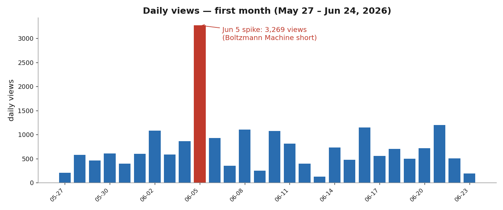
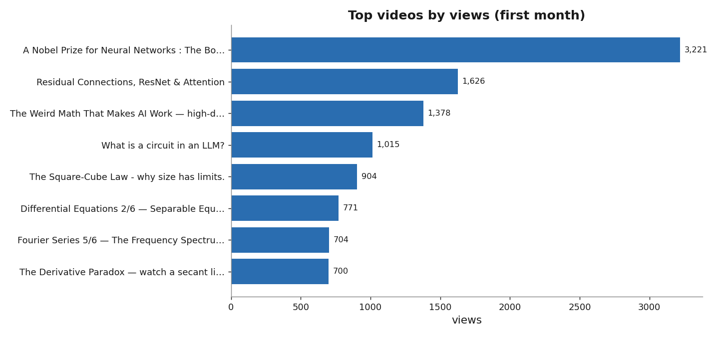
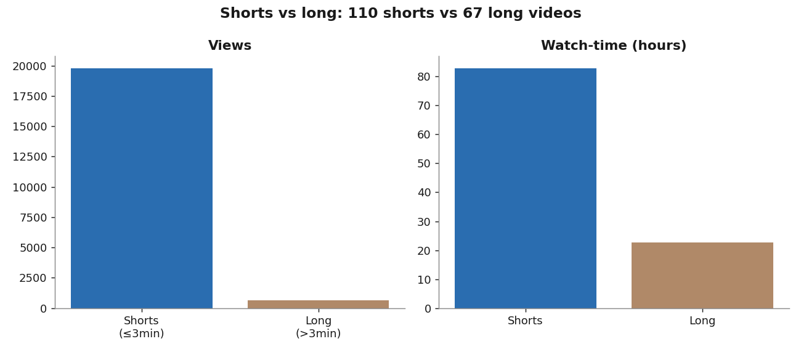
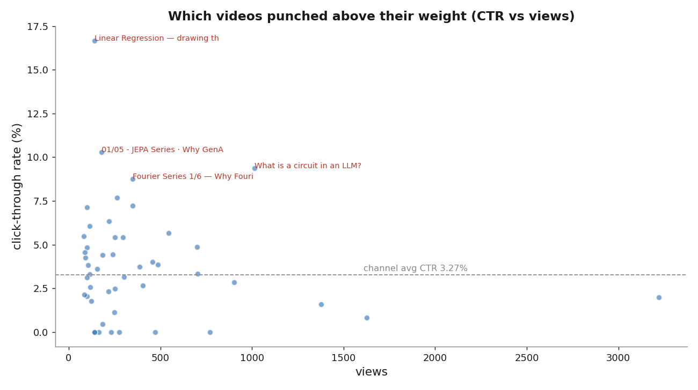

My First Month on YouTube, by the Numbers
A month ago I started uploading short, dense explainers on AI, machine learning, and the math underneath them. No audience, no plan beyond "explain one idea clearly per video." Here's an honest, data-driven look at the first month — May 27 to June 24, 2026 — straight from the YouTube analytics, the good and the humbling.

The headline numbers
| Metric | First month |
|---|---|
| Views | 20,442 |
| Watch time | 105.9 hours |
| Subscribers gained | 55 |
| Impressions | 24,033 |
| Click-through rate | 3.27% |
| Videos published | 177 |
Twenty thousand views in a month from a standing start feels surreal. But the averages hide everything interesting — so let's break it down.
A few videos carry the whole channel
The view distribution is brutally top-heavy. A handful of videos did most of the work, and a long tail did almost nothing.

The breakout was the Boltzmann Machine short — "A Nobel Prize for Neural Networks" — at 3,221 views, the single bar that defines the whole month. You can see it as the red spike on June 5 above: 3,269 views in one day, more than triple any other day. One video genuinely changed the trajectory.
Right behind it: Residual Connections / ResNet & Attention (1,626), The Weird Math That Makes AI Work (1,378), and What is a circuit in an LLM? (1,015).
Shorts bring the crowd; long videos bring the depth
I made two very different kinds of video, and the data splits cleanly along that line.

- Shorts (≤3 min):
110 videos, **19,800 views** — virtually all the reach. - Long videos (>3 min): ~67 videos, only ~650 views — but they pull their weight in watch-time depth.
The single biggest watch-time contributors tell the story: the Boltzmann short (6.8 hours), but also the long Mathematical Framework for Transformer Circuits (5.8 hours from just 302 views), The Derivative Paradox (5.3 h), and Why 1.58-bit LLMs? (5.2 h). Shorts win discovery; long videos win attention. Both matter.
Click-through rate: the title-and-thumbnail game
Views depend on how many people click after seeing the thumbnail. The channel average is 3.27%, but a few videos massively over-performed.

The CTR champions:
- Linear Regression — drawing the best line through data — 16.7%
- JEPA Series 01/05 — Why GenAI Has a Fundamental Problem — 10.3%
- What is a circuit in an LLM? — 9.4% (and 1,015 views — the rare video that's both clickable AND widely seen)
- Fourier Series 1/6 — Why Fourier? — 8.8%
The pattern is clear: concrete, curiosity-gap titles win ("Why GenAI Has a Fundamental Problem", "drawing the best line through data") over abstract ones. The single best outcome is the top-right of that chart — high views and high CTR — and "What is a circuit in an LLM?" was the closest thing to that sweet spot.
What the data taught me
- One hit reshapes everything. The Boltzmann short alone was ~16% of the month's views. You can't predict the hit, so the only move is to keep shipping.
- Shorts for reach, longs for trust. Shorts found the audience; the long explainers are where the few who arrive actually stay and subscribe.
- Titles are half the battle. A 16.7% CTR vs a sub-1% CTR on similar topics is almost entirely framing.
- Subscribers are slow and earned. 55 subs from 20k views (~0.27%) — people watch one idea and move on. Converting viewers to subscribers is the real next chapter.
Onward
55 subscribers isn't a milestone anyone brags about — but a month ago it was zero, and 20,000 people watched something I made to understand an idea a little better. The plan for month two is unchanged: one clear idea per video, shipped relentlessly, with sharper titles and a few more long-form deep dives for the people who want to go deeper.
If any of this sounds like your kind of thing — AI, ML, and the math behind it, explained simply — I'd love for you to come along. Thanks for reading. 🙏
All figures from YouTube Studio analytics, May 27 – June 24, 2026. Charts generated from the raw export.
Cite this post
Auto-generated. Verify for your institution's requirements.